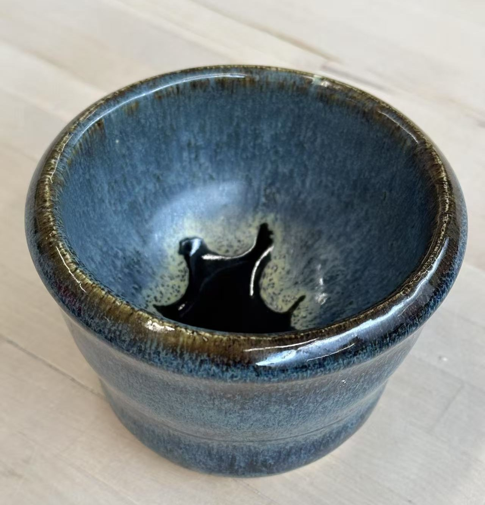
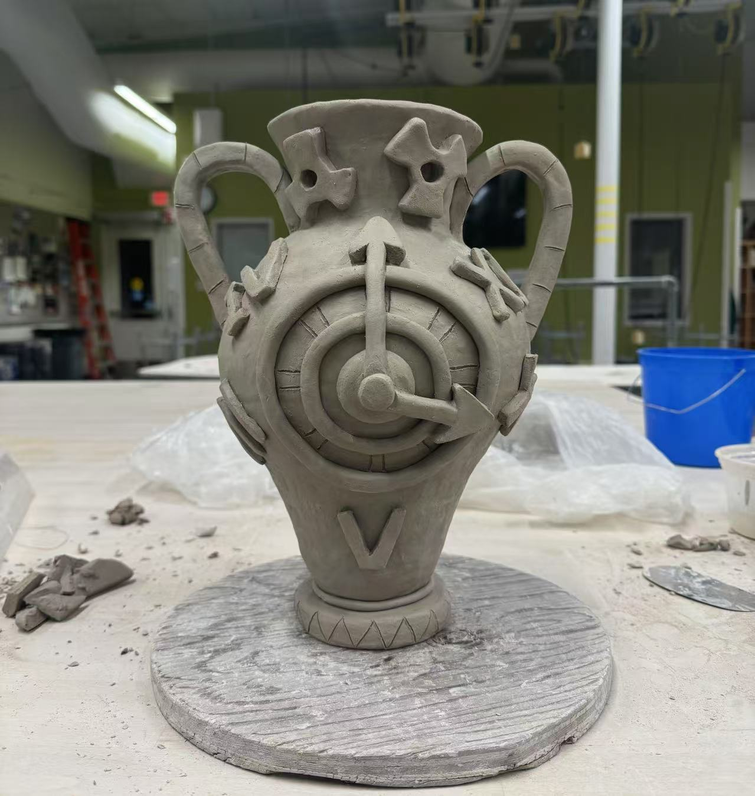
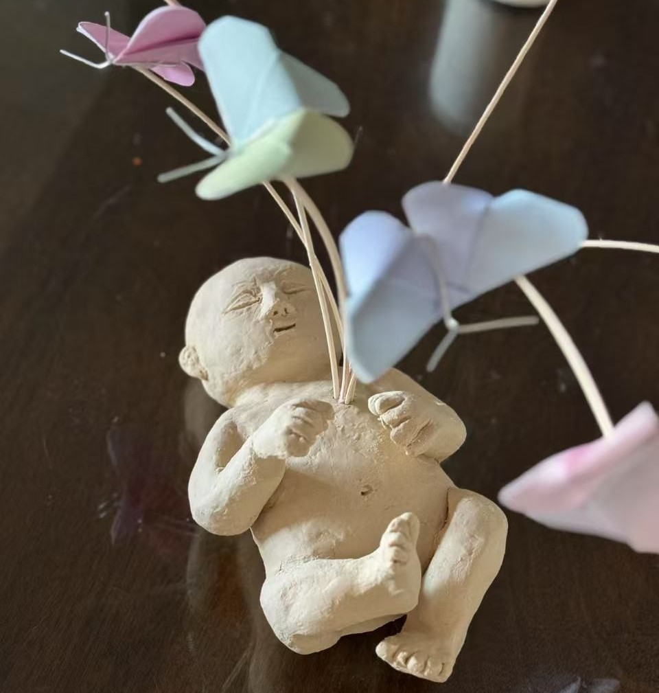
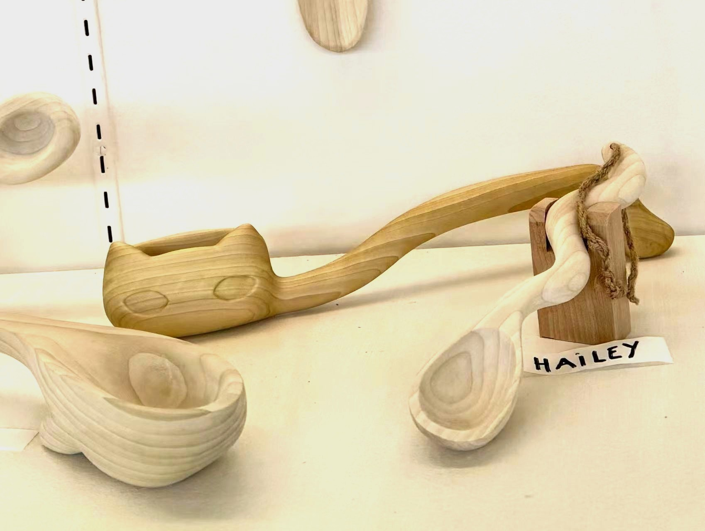
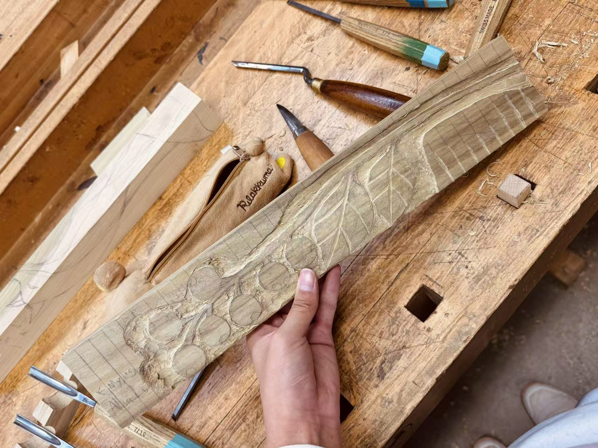

My Interest in Ceramics!
- Ceramic Bowl
- A ceramic bowl I made during my ceramic class with throwing technique. I tried to give it a melting
sense on glazing.

- Ceramic Vase
- A clay vase I made with clock elements on it.

- Combination Sculpture Work
- A clay baby I made with a combination of paper butterflies reached out from the heart of the baby
using wood sticks.

My Interest in Wood Working!
- Not A Spoon: Cat Spoon
- A wood project I make for the "Not A Spoon" topic, with the "spoon" cat-like.

- Apron of A Bench: Berries
- An apron I carved as part of a team's bench project, with berry and leaf designs on it.
